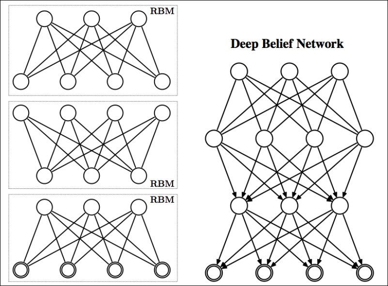

Deep Belief networks (DBNs) were one of the most popular, non-convolutional models that could be successfully deployed as deep neural networks in the year 2006-07 [124] [125]. The renaissance of deep learning probably started from the invention of DBNs back in 2006. Before the introduction of DBNs, it was very difficult to optimize the deep models. By outperforming the Support Vector machines (SVMs), DBNs had shown that deep models can be really successful; although, compared to the other generative or unsupervised learning algorithms, the popularity of DBNs has fallen a bit, and is rarely used these days. However, they still play a very important role in the history of deep learning.
DBNs are generative models composed of more than one layer of hidden variables. The hidden variables are generally binary in nature; however the visible units might consist of binary or real values. In DBNs, every unit of each layer is connected to every other unit of its neighbouring layer, although, there can be a DBN with sparsely connected units. There possess no connection between the intermediate layers. As shown in Figure 5.9, DBNs are basically a multilayer network composed of several RBMs. The connections between the top two layers are undirected. However, the connections between all other layers are directed, where the arrows point toward the layer nearest to the data.
Except for the first and last layer of the stack, each layer of a DBN serves two purposes. First, it acts as a hidden layer for its predecessor layer, and as a visible layer or input for its next layer. DBNs are mainly used to cluster, recognize and generate video sequences and images.

Figure 5.9: A DBN composed of three RBMs is shown in figure
A greedy layer-wise training algorithm for training DBNs was proposed in 2006 [126]. This algorithm trains the DBN one layer at a time. In this approach, an RBM is first trained, which takes the actual data as input and models it.
A one-level DBN is an RBM. The core philosophy of greedy layer-wise approach is that after training the top-level RBM of an m-level DBN, the interpretation of the parameters changes while adding them in a (m+1) level DBN. In an RBM, between layers (m-1) and m, the probability distribution of layer m is defined in terms of the parameters of that RBM. However, in the case of a DBN, the probability distribution of layer m is defined in terms of the upper layer's parameters. This procedure can be repeated indefinitely, to connect with as many layers of DBNs as one desires.